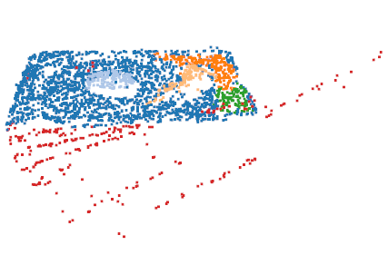
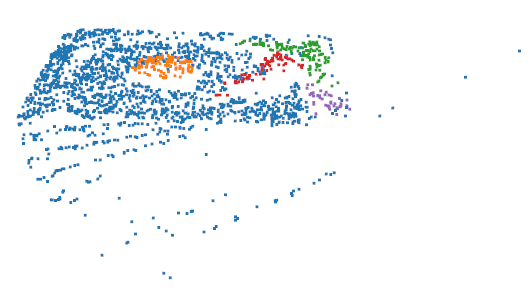
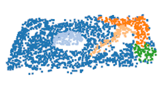

Encode geometry
Multi-scale neighborhoods capture fine and coarse structure. A geometry-aware transformer connects local features with global context.
TEXAS A&M UNIVERSITY / 3D PERCEPTION
Reliable geometry. Robust segmentation.
Unreliable-point filtering and part understanding in a single forward pass.
Zachry Department of Civil & Environmental Engineering
Texas A&M University
* Corresponding author



Geometry-aware filtering. Real HDD point clouds from the paper. GUARD identifies geometric inconsistencies to remove scanning artifacts while retaining meaningful part structure.
Ghost structures can look locally plausible while being globally inconsistent. GUARD learns which geometric representations to trust.
Reliable part segmentation of scanned hard disk drives (HDDs) is an important perception requirement for automated component handling and robotic disassembly in e-waste recycling. Although point clouds provide detailed geometric information for such tasks, real scans often contain sensor noise and reconstruction artifacts, particularly ghost structures that are locally plausible yet geometrically inconsistent, making both noise removal and semantic interpretation unreliable.
We propose GUARD, a geometric uncertainty-aware framework that performs point filtering and segmentation within a single forward pass by modeling the reliability of learned geometric representations. GUARD combines a multi-scale geometric transformer with a multi-bandwidth random Fourier feature Gaussian Process to estimate per-point geometric uncertainty, complemented by predictive entropy to suppress unreliable measurements while preserving informative structures.
GUARD is primarily evaluated on 2,745 real HDD point clouds containing scanning and reconstruction artifacts. On this dataset, it improves PointNet++ segmentation mIoU from 0.7739 to 0.8318, while geometric uncertainty achieves an F1 score of 0.7931 for corrupted-point detection on manually annotated ScanNet samples.
A lightweight module for PointNet++, DGCNN, and Point Transformer backbones.

Multi-scale neighborhoods capture fine and coarse structure. A geometry-aware transformer connects local features with global context.
A multi-bandwidth random Fourier feature Gaussian Process measures uncertainty in geometric embeddings. Spectral normalization stabilizes learning.
Geometric uncertainty detects structural inconsistencies; predictive entropy refines ambiguous boundaries within the same forward pass.
Real scans and controlled corruptions, evaluated with the same segmentation backbones.
GUARD improves PointNet++ by 5.79 percentage points over the vanilla backbone in this evaluation.
ScanNet · Point Transformer V3
| Method | mIoU ↑ |
|---|---|
| PTv3 | 0.7757 |
| PTv3 + GUARD | 0.7902 |
A 1.45 percentage-point gain on ScanNet, with approximately 0.4M additional parameters.
Base parameters + GUARD addition, in millions
| Backbone | Base | Added |
|---|---|---|
| PointNet++ | 2.2M | +0.3M |
| DGCNN | 1.9M | +0.4M |
| Point Transformer | 46.2M | +0.4M |


Original scans, PointCVaR, and GUARD outputs from the manuscript.


Geometric uncertainty separates corrupted points more effectively than predictive entropy on the annotated ScanNet samples.
F1 score for corrupted-point detection on the annotated ScanNet evaluation.
Manually annotated ScanNet samples · filtering ratio 0.9
| Measure | Precision ↑ | Recall ↑ | F1 ↑ |
|---|---|---|---|
| Predictive entropy | 0.2284 | 0.2144 | 0.2212 |
| GUARD σgeo | 0.8032 | 0.7832 | 0.7931 |


Component ablations on real HDD scans and a comparison of geometric uncertainty with entropy.
HDD outlier detection · higher is better
| Variant | Precision | Recall | F1 |
|---|---|---|---|
| Baseline (RFF) | 0.3358 | 0.2537 | 0.2890 |
| Without MSN | 0.9771 | 0.0953 | 0.1736 |
| Without TF | 0.7192 | 0.5979 | 0.6530 |
| Without MdRFF | 0.2851 | 0.8636 | 0.4287 |
| Without SN | 0.2108 | 0.1324 | 0.1626 |
| GUARD (full) | 0.8330 | 0.5897 | 0.6906 |
ShapeNetPart · uncertainty-component ablation
| Module | Noise kept ↓ | mIoU ↑ |
|---|---|---|
| Only entropy | 16.1% | 0.7203 |
| Only GGPH | 11.7% | 0.6672 |
Geometric uncertainty provides stronger filtering, while entropy alone yields higher segmentation mIoU in this ablation.
A filtering trade-off on HDD. DGCNN + GUARD scores 0.7425 mIoU versus 0.7434 for vanilla DGCNN. The paper examines how aggressive filtering can remove informative points used by local graph construction.
The repository contains implementation, evaluation, training, and visualization instructions. The full HDD dataset release is planned after publication.
GitHub repositoryGUARD_Point_denoiser ↗@unpublished{wang_guard,
title = {{GUARD}: Geometric Uncertainty-Aware Robust
Denoiser for Point Cloud Segmentation},
author = {Wang, Zuoxu and Liang, Xiao},
note = {Manuscript},
url = {https://github.com/001-Wang/GUARD_Point_denoiser}
}